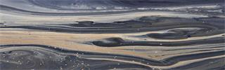

项目介绍

近年来，环境污染和全球气候变化造成水生生物多样性下降、 生物完整性缺失和物种灭绝，最终导致生态系统功能受损。
本项目通过鼓励公众参与水环境监测的采样流程，利用宏基因条形码技术对 来自全国各地的水环境进行生物多样性监测，进一步评价全国的水环境健康 状况,提供河流等湿地生态系统的生物多样性分布地图，建立河流生态健康评 估报告。
最新项目
加入我们
欢迎扫描二维码，关注我们的微信公众号“河流生态地图”，获取最新资讯并参与志愿活动。
河流生态的改善需要你我共同努力！